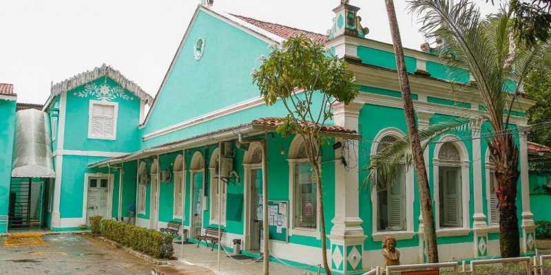
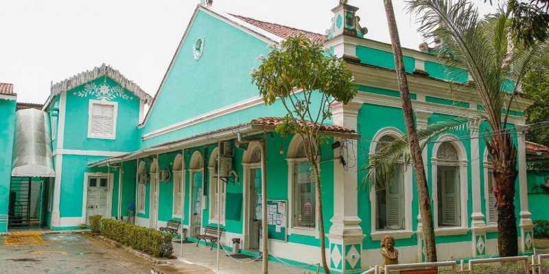

Thyalles Campos
Desenvolvedor de Sistemas
Olá! Meu nome é Thyalles e sou um estudante da Cesar School do curso de Desenvolvimento de Sistemas. Desde de pequeno eu sempre gostei de matemática e de jogos online. Hoje em dia, sou apaixonado por tecnologia e inovação.
Além de gostar de tecnologia, sempre tive um pezinho dentro da arte. Já estudei música no CEMO e também no Conservatório Pernambucano de Música. Também tenho uma paixão pela dança, desde 2014 faço parte do cenário de K-Pop cover do recife e também pratiquei Ballet e Dance House.
 
